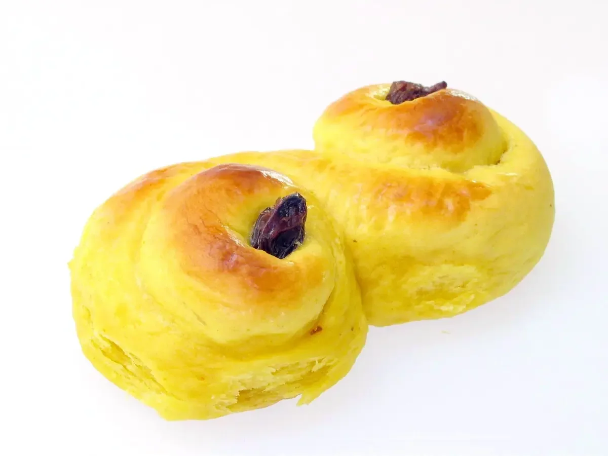
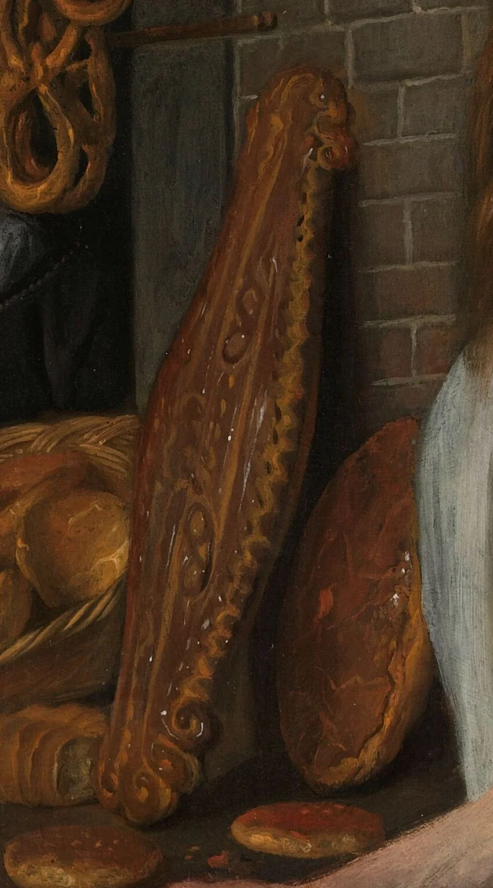
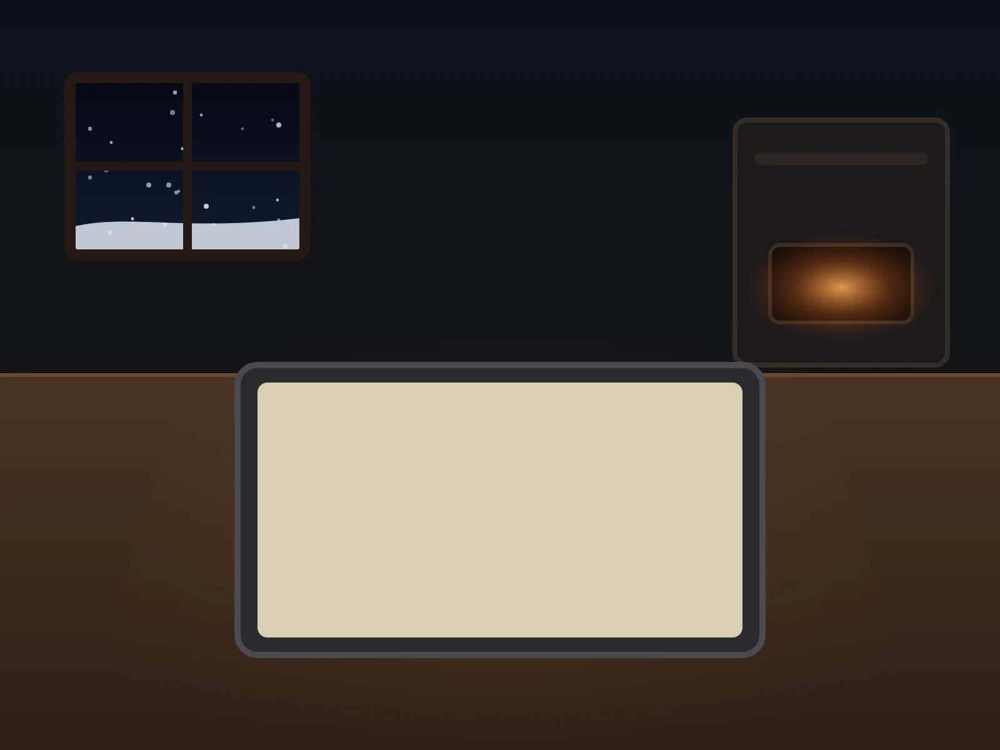

아직 펼치지 않은 카드성탄 밤의 식탁 · 4루세카트12월 13일, 스웨덴 사람들은 사프란으로 노랗게 물들인 빵을 구워요. 왜 하필 이날일까요?노란 빵을 굽는 날이 있대!
12월 13일 새벽스웨덴 · 옛 달력으로 가장 긴 밤이 끝나 갈 때
루세카트
스웨덴이 옛 달력을 쓰던 때, 12월 13일로 넘어가는 밤은 한 해에서 가장 긴 밤이었어요. 그 밤의 끝, 깜깜한 부엌에서 노란 S자 빵을 하나씩 빚어 보세요.
옛날 스웨덴에서는 12월 13일 밤이 일 년 중 가장 긴 밤이었대. 깜깜한 부엌에서 노란 빵을 같이 빚어 볼까?
검수 전 시안이에요(기준서 1판). 그 밤과 빵의 이름은 스웨덴 노르디스카 박물관과 린셰핑 대학 자료를, 1658년 그림은 레이크스 미술관 설명을 따랐어요. 만드는 차례는 앞면 이야기의 차례 그대로이고, 무대 그림은 이 안내서가 그렸어요. 상상은 ‘눈 감고 상상해 보기’에만 썼어요.
시안 확인용카드 단계 미리 보기
1
가장 긴 밤, 노란 빵
스웨덴이 옛 율리우스력을 쓰던 1753년까지, 한 해에서 가장 긴 밤은 12월 12일에서 13일로 넘어가는 밤이었어요. 13일은 루치아 성인(교회가 기리는 거룩한 사람)의 날이에요. 루치아라는 이름은 ‘빛’을 뜻하는 라틴말 룩스(lux)에서 왔어요.
옛 농가 사람들은 이 밤에 나쁜 힘이 날뛴다고 믿었어요. 그래서 밤새 깨어 집과 짐승을 지키기도 했어요.
그 밤이 끝나 갈 무렵, 깜깜한 부엌에서 노란 빵을 빚어 보세요. 사프란, 긴 막대, 양 끝을 반대로 말기, 건포도 차례예요.
우리 집이라면?
스웨덴 노르디스카 박물관에 따르면, 이 빵에 사프란을 넣기 시작한 것은 19세기 끝 무렵이에요. 가장 긴 밤을 지키던 풍습보다 노란 빛깔이 더 나중에 왔어요. 지금은 S자 모양이 가장 흔해요.
옛날 스웨덴에서는 12월 13일 밤이 일 년 중 가장 긴 밤이었대. 깜깜한 부엌에서 노란 빵을 빚어 볼까?
물어보기가장 긴 밤에 노란 빵이 구워져 나오면 어떤 기분일까?
2
이름의 수수께끼
루세카트는 ‘루치아의 고양이’라는 뜻이에요. 그런데 노르디스카 박물관은 이 빵이 네덜란드와 북독일의 단 밀빵 다위베카터(duivekater)에서 왔다고 설명해요. 17세기에 네덜란드 사람들이 예테보리로 가져왔을 거래요.
스웨덴 사람들 귀에 그 이름은 ‘디벨스카테르’, 곧 ‘악마의 고양이’처럼 들렸어요. 빵이 12월 13일과 이어지면서 이름이 루세카테르(루세카트 여럿)로 바뀌었어요.

1658년 네덜란드 화가 얀 스테인이 그린 레이던의 빵집 앞에도 다위베카터가 있어요.
루세카트는 ‘루치아의 고양이’라는 뜻이야. 그런데 고양이랑은 상관없고, 네덜란드 빵 이름에서 왔대!
물어보기두 빵을 견주어 봐. 어디가 닮았고 어디가 달라?
눈 감고 상상해 보기
창밖에는 눈이 쌓이고, 한 해에서 가장 긴 밤이 이제 끝나 가요. 화덕 불빛만 붉은 부엌, 녹인 버터에서 번지는 사프란 향, 손바닥 아래 말랑한 반죽. 판 위에 노란 S자가 하나둘 늘어 가면, 어둠 속에 작은 해가 여럿 뜬 것 같아요.
눈을 감아 봐. 창밖엔 하얀 눈, 부엌은 깜깜해. 화덕만 빨갛게 빛나. 노란 반죽을 돌돌 말아 S자! 건포도 콕! 어둠 속에 작은 해가 떴어!
나의 자리
한 해 가장 긴 밤, 옛 농가 사람들은 밤새 깨어 집과 짐승을 지키기도 했어요. 나에게도 깨어서 새벽을 기다린 밤이 있었나요?
아주아주 긴 밤에 깨어 있다면, 새벽까지 무엇을 하며 기다릴까?
마음에 닿는 한 줄을 고르거나 직접 써 보세요. 한 줄을 남기면 이 자리의 도장이 찍혀요. 이 기기에만 저장돼요.
더 깊이
이야기를 보다 궁금해질 만한 것들이에요. 답을 읽거나 짧은 영화로 보세요.

가장 긴 밤에 사람들은 무엇을 그렇게 무서워했어요?
‘악마의 고양이’ 빵이 어떻게 ‘루치아의 고양이’가 됐어요?
뒷이야기
아직 펼치지 않은 이야기예요. 누르면 이야기가 펼쳐지고 색이 돌아와요. 더 알고 싶으면 근거를 따라가 보세요.
다 펼치면, 다음에 오실 때 새 이야기가 찾아와요.
오늘의 뒷이야기는 여기까지예요. 다음에 오시면 새 이야기가 기다리고 있어요.
펼친 뒷이야기 · 누르면 다시 볼 수 있어요
더 찾아보기
기록마다 다른 점
사프란은 언제부터? 노르디스카 박물관은 이 빵에 사프란을 넣은 때를 19세기 끝 무렵으로 봐요. 이 박물관의 큐레이터였던 레나 케트스트룀 회크는, 스웨덴에서 사프란 빵이 1600년대에 이미 귀한 빵이 되어 이름난 사람의 장례 잔치에 오르곤 했고, 1800년대에 들어서야 여러 사람이 먹게 되었다고 썼어요.
악마의 고양이? 옛 이름 때문에 무서운 이야기가 붙곤 해요. 하지만 케트스트룀 회크는 이 이름이 고양이와는 아무 상관이 없다고 말해요.
악마를 쫓는 빵? 더 로컬 스웨덴은 잠든 고양이 모양의 빵이 독일에서 들어왔고, 사프란이 악마를 쫓는다고 여겨 이 빵에 좋은 뜻이 붙었다는 이야기를 소개해요. 아틀라스 옵스큐라는 ‘빵이 악마를 쫓았다’는 말을 흔히 되풀이되는 짐작일 뿐이라고 해요.
집에서 빚어 보기
사프란을 빻아 녹인 버터에 넣고 15분쯤 우려 반죽에 섞어요. 반죽을 양 끝이 가는 막대로 밀고, 한쪽 끝을 납작하게 말고 다른 쪽 끝은 반대로 말아 S자를 만들어요. 달걀물을 바르고, 말린 자리마다 건포도를 하나씩 박아 구워요.
차례대로 빚기 금박
사프란 → 긴 막대 → 양 끝을 서로 반대로 말기 → 건포도 차례로 다 빚으면 카드에 금박이 입혀져요.
사프란 → 긴 막대 → 한쪽 끝 → 다른 쪽 끝 → 건포도 차례로 빚기
가장 긴 밤의 끝 채색
아이와 함께 끝까지 보면 카드가 채색돼요.
아이와 함께 ‘영화처럼 보기’를 끝까지 보기
근거 보기 (11)
- 린셰핑 대학, 「루치아 축하: 오래된 뿌리를 가진 특별한 전통」 — 율리우스력에서 12월 12~13일 밤이 가장 긴 밤, 1753년, 라틴말 lux, 나쁜 힘을 막으려 밤새 지킴
- 노르디스카 박물관 「Lucia」 — 다위베카터가 17세기 예테보리로, 디벨스카테르, 루세카테르로 이름이 바뀜, S자, 19세기 끝 무렵 사프란, 16세기까지 가톨릭 달력의 루치아 날
- 레이크스 미술관 SK-A-390 — 얀 스테인(1658), 빵들(작은 빵·크라켈링·카데트·다위베카터), 세운 다위베카터, 뿔피리 부는 아들 타데우스
- 아틀라스 옵스큐라 「Detangling the Devilish Origins of Scandinavia’s St. Lucia Buns」 — 레나 케트스트룀 회크: 고양이와 상관없음, 다위베카터의 뜻, 만드는 법
- 더 로컬 스웨덴(2018.12.12) — 케트스트룀 회크의 책 『God Jul!』: 1600년대 귀한 사프란 빵, 장례 잔치, 1800년대에 널리
- 위키미디어 공용: 사프란(크로커스 사티부스) 사진 정보
- 브리태니커 「St. Lucia’s Day」(이야기) — 율리우스력에서는 12월 13일이 동지, 새 달력 뒤에도 그날에 남음
- 브리태니커 「Gregorian calendar」 — 율리우스력의 한 해가 길어 계절이 100년에 거의 하루씩 앞섬, 스웨덴은 1753년
- 타임앤데이트 「February 30」 — 1700·1704·1708년, 1712년 2월 30일, 1753년 2월 17일 다음 날 3월 1일
- 위키미디어 공용: 얀 스테인 「빵집 부부」(SK-A-390) 파일 정보 — 레이크스 미술관 작품 설명(1996년 전시 도록): 부부의 약혼과 결혼, 뿔피리, 빵들, 고친 자국, 화가의 농담
- 브리태니커 「saffron」 — 1파운드에 꽃 7만 5천 송이, 가장 비싼 향신료
그림·사진·소리 출처
- 사진: Jonas Bergsten · 퍼블릭 도메인 · 위키미디어 공용
- 그림: 얀 스테인(Jan Steen) · 퍼블릭 도메인 · 위키미디어 공용(레이크스 미술관)
- 그림: 얀 스테인 · 퍼블릭 도메인 · 위키미디어 공용(레이크스 미술관)
- 사진: Emilie40 · 퍼블릭 도메인 · 위키미디어 공용
- 그림: 얀 스테인(Jan Steen) · 퍼블릭 도메인 · 위키미디어 공용(레이크스 미술관)
- 그림: 얀 스테인(Jan Steen) · 퍼블릭 도메인 · 위키미디어 공용(레이크스 미술관)
- 그림: 얀 스테인(Jan Steen) · 퍼블릭 도메인 · 위키미디어 공용(레이크스 미술관)
- 그림: 얀 스테인(Jan Steen) · 퍼블릭 도메인 · 위키미디어 공용(레이크스 미술관)
- 그림: 얀 스테인(Jan Steen) · 퍼블릭 도메인 · 위키미디어 공용(레이크스 미술관)
- 그림: 얀 스테인(Jan Steen) · 퍼블릭 도메인 · 위키미디어 공용(레이크스 미술관)
- 그림: 얀 스테인(Jan Steen) · 퍼블릭 도메인 · 위키미디어 공용(레이크스 미술관)
- 이 안내서가 그린 12월 13일 새벽 전의 부엌(놓아 보기 무대) · 노르디스카 박물관 자료를 바탕으로
- 이 안내서가 그린 12월 13일 새벽 전의 부엌(놓아 보기 무대) · 노르디스카 박물관 자료를 바탕으로
- 이 안내서가 그린 12월 13일 새벽 전의 부엌(놓아 보기 무대) · 노르디스카 박물관 자료를 바탕으로
- 그림: 얀 스테인(Jan Steen) · 퍼블릭 도메인 · 위키미디어 공용(레이크스 미술관)
- 사진: Jonas Bergsten · 퍼블릭 도메인 · 위키미디어 공용
- 놓아 보기 무대: 이 안내서가 그린 12월 13일 새벽의 부엌 · 앞면 이야기의 만드는 차례와 노르디스카 박물관 자료를 바탕으로
‘처음 만나는 기독교 문화’의 깊은 카드예요. 카드 단계와 남긴 글은 이 기기에만 저장돼요.